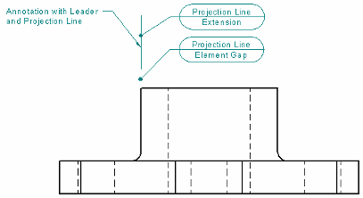
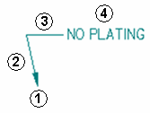

Text and Leader tab
The Text and Leader tab in the Properties dialog box contains options that specify how annotations such as leaders, balloons, callouts, control frames, and symbols are displayed. Not all options are available for all annotations.
- Text
-
Specifies how the text appears in an annotation. Changes in these fields override the default text style.
- Font
-
Specifies the font to use for the text.
- Font style
-
Specifies the font style to use for the text.
Note:In a surface texture symbol, the shelf line may not extend the full length of the annotation text. You can correct this in the dimension style by entering a non-zero value in the Symbol overline extension option on the Annotation tab in the Dimension Style dialog box.

- Font size
-
Specifies the text size of 2D annotations.
In synchronous models, this option also specifies the text size of PMI annotations.
- Fill text with background color
-
Fills the text with the current background color.
- Leader & Projection Line
-
Specifies how a leader or projection line is displayed. The Element gap and Extension settings are applied when the annotation is moved beyond the edge of the annotated element they are attached to, as illustrated here.

- Break line
-
Shows or hides a horizontal break line (3) where the leader line (1)(2) meets the annotation (4), as illustrated here.

The length of the break line is specified as a multiple of the font size, for example, 1.5 x Font Size.
- Break line angle
-
Sets the break line angle with respect to the Break line position option specified on the Leader command bar.
When the Break line position is horizontal or vertical, the angle is set to 0.00 degrees automatically. When you change the Break line angle value, the break line is rotated from that horizontal or vertical starting position. You can use positive or negative numbers to rotate the break line in a counterclockwise or clockwise direction, respectively.
Note:You also can use the Angle box on the Leader command bar to specify the break line angle.
- Element gap
-
Specifies how far the projection line is set back from the annotated element. This value is a multiple of the font size.
- Extension
-
Specifies how far the projection line extends beyond where the leader attaches to the projection line. This value is a multiple of the font size.
- Color
-
Sets the color of an annotation.
- Line width
-
Sets the width of annotation lines, such as leader lines, break lines, and reference lines.
- Angle
-
Specifies the orientation angle for text in an annotation. This option is not displayed for leaders.
- Symbol line width
-
Specifies the line thickness used to draw the weld symbol annotations.
Example:

To apply the Symbol line width to PMI weld symbols, you must also select the PMI tab→Dimension group→Model Size PMI command on the ribbon.
Note:The Width option on the Lines and Coordinate tab in the Dimension Style dialog box specifies the width for the leader, reference, and tail lines associated with the weld symbol.
- Text scale
-
Applies a scale value to the text height of annotations. Increasing or decreasing the text scale changes the overall text size. The default is 1.0.
- Aspect ratio
-
For callout text and symbols, specifies the font width with respect to height. Increasing or decreasing the aspect ratio only changes the font width of the selected callout; the height is unchanged.
Example:
- Terminator
-
Specifies how the terminator is displayed on the leader.
- Type
-
Sets the terminator type.
Datum frame terminator type
Displays
Anchor (filled)

Anchor (hollow)

Line

Normal
Uses the active terminator type for dimensions, for example:

Datum target terminator type
Displays
Arrow (filled)

Arrow (hollow)

Arrow (open)

Blank
No symbol is displayed on the terminator line.
Note:Another way to change a terminator type is to click the terminator handle of an annotation leader line, and then choose one from the list that is displayed. To learn how to do this, see Change an annotation terminator.
- Length
-
Sets the length of the terminator. This value is a ratio of the font size.
- Terminator line width
-
Specifies the terminator line width when the terminator type is set to Line.
The default width is the Datum frame terminator line width on the Terminator and Symbol tab in the Dimension Style dialog box.
- All around symbol size
-
Specifies the diameter of the all around symbol. This value is a ratio of the font size. The default is 1.0.
How do I
Place a calloutPlace a hole callout
Place a feature callout
Customize a feature callout
Define smart feature properties in the Dimension style
Learn more
Formatting callout text and borderManipulating callouts
Look up more details
Callout commandCallout command bar
Callout Properties dialog box
General tab (Callout Properties dialog box)
Feature Callout tab
Border tab (Callout Properties dialog box)
Quick links
Place a feature callout dimensionBasic reference and property text rules
Format codes to modify reference and property text output